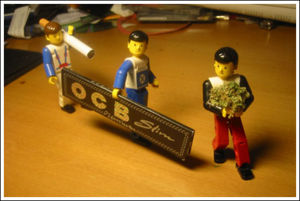
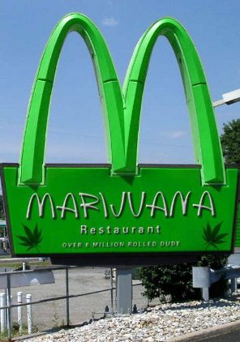
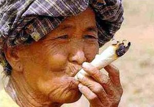

Ley del porreta
 De: La Frikipedia, la enciclopedia extremadamente seria.
De: La Frikipedia, la enciclopedia extremadamente seria.
 La mano de obra básica cargando los materiales indispensables
 Sitio predilecto para comer de todo seguidor de la ley

Hasta el pobre Bob sigue la ley
A ti también te gustaría que tu novia siguiera el manual del porreta
 Esta mujer fue una de las firmantes de la ley del porreta
"La Ley del porreta, quien se lo lia se lo peta" con esta rima consonante nació todo un código de conducta para una generación.
La Ley del porreta nace a finales de los 90, cuando en consumo de Mariguana y derivados pasó de ser algo propio de yonkis (Perroflautas fumetas y demás almas de voluntad etérea) a ser algo más "aceptado" sobre todo por las llamada generación de la PlayStation (marca registrada).
Se pasó de la pegadiza tonadilla a una serie de recomendaciones para que el consumo del cannabis y/o sus deribados sea lo más equanime y satisfactorio posible.
Estas normas no han sido escritas nunca antes, por ello puede que susciten controversia entre los lectores.
Normas de la Ley del porreta
- El que se lo lía, se lo peta.
Esta norma hace referencia a la fabricación manual del porro. Aquel que se ha tomado la molestia de hacerlo es el que tiene el derecho a encenderlo y disfrutarlo en primer lugar.
- El segundo en fumar es el dueño del material.
Deriva de la primera norma ya que el dueño del polen o de la mariguana (el costo) acaba exhausto de tanto "trabajar" así que cede el su derecho a "liar y petar" a otro con la condición implícita de que este le pasará el porro en primer lugar.
- El porro se fuma en ambiente de amistad, buen rollo y generosidad.
Estamos hablando de una droga social y como prueba de ello esta parte nos insta a compartir este "placer" con seres queridos de forma amigable, generosa y cordial. Incluso se firman treguas en presencia de un buen peta.
- El porro no se pide, se pasa.
Teniendo en cuenta el punto anterior esta norma se explica por si sola. No hay cabida para el egoísmo en una "fumada". Todo el que fume tendrá en cuenta a las demás personas y pasará el peta de tal manera que todos, o por lo menos los 3 o 4 más cercanos, fumen por igual.
- El peta se pasa encendido.
Esta quizá sea la directriz más laxa y menos extendida ya que solo hace referencia a un acto desinteresado el cual facilita, en mayor o menor medida, la fumada.
Estas son las 5 normas básicas, para los que se rayen más seguid leyendo...
- El porro no se mama
Esta ley debería ser fundamental pero es bastante común que los fumetas inexpertos no la cumplan, aunque es bastante simple, solo consiste en no chupar la boquilla.
- Solo se invita a fumar a quien te invita.
Hay gente que es demasiada egoísta cuando tiene algo a fumar y no te invita entonces tu no puedes invitarle, solo invita a fumar a quien te invite a ti.
- Todo buen porreta..
Todo un buen porreta tiene que llevar encima tabaco (si puede ser marcas recomendadas para fumar), papel largo o de rollo (si puede ser ocb o smoking) ,un buen mechero cliper, en caso de no tener un mechero cliper es fundamental tener una anilla de los extintores para prensar y lo fundamental, un buen material.
- Un buen lugar.
Los buenos porretas tienen sus lugares privados para fumar o zonas de relax. Los que fuman delante de todo el mundo o en lugares donde hay mucha gente es para hacerse el chulo (idiotas, es mejor fumar apartado donde la fumada pueda ser gradualmente correcta, zonas donde nadie podrá molestarte ni donde la policía pase).
- Policía
Si llevas material encima tienes que ir con cuidado con la policía, si llevas pintas de buen fumeta, tienes mas posibilidades para que la policía te registre pero siempre todo buen fumeta tiene sus trucos para que no los cojan con el material encima así ni les fichan, ni les quitan el material.
- Si puede ser fuma marihuana.
Sin duda lo mejor para fumar es la marihuana. eso si que sea buena hierba como debe de ser.
- Cuando compres el material.
Búscate un buen camello, si tu camello no esta o se a quedado sin material , a la hora de pillar vete con ojo algunos ESTAFAN si compras marihuana que no te den el chivato o la bolsa echa que lo pongan delante tuyo, comprueba que no te pongan hojas y antes de pillar se tiene que probar. seleccionando tu el cogollo que quieras tu no el que te den ellos puede ser hierba de distinta marca o categoría .TEN CUIDADO
"...si fumas..no conduzcas mejor vuela.."
Véase también
Mundo Marihuana:[1]
La Marihuana:[2]
Autor(es):
- Fordus
- Lljosemll
- ArreKarallo
- Veni Vidi Vici
- Jos-L"
- Harry El del Pote
- Kevin-fumamolspeys
- Hippieska
- Peperramon
Frikipedia 2005-2016, Licencia
GFDL 1.2 - Extraído por FrikiLeaks